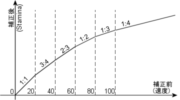

武器速度一覧
| 基本攻撃間隔(秒) | 対応武器名 |
| 5.25 | Heavy crossbow |
| 5.00 | Lance, Crossbow |
| 4.75 | Halberd, Yumi, Composite bow, Bow |
| 4.50 | War mace |
| 4.25 | Elven composite bow, Hammer pick, War hammer, Viking sword, Bardiche |
| 4.00 | Large battle axe, Long sword, Scepter |
| 3.75 | Battle axe, Two handed axe, Ornate axe, No-dachi, Scythe, Lajatang, Maul, Broadsword, Double axe, Executioner's axe, War axe, Gnarled staff, Sledge hammer, Smith's hammer |
| 3.50 | Rune blade, Pick axe, Bone harvester |
| 3.25 | Scimitar, Axe, Bladed staff, Pike, Diamond mace, Magical shortbow, Black staff, Daisho, Mace, Crook, Wand |
| 3.00 | Elven Machete, Hatchet, Repeating Crossbow, Leaf blade, Spear, Radient scimitar, War fork, Pitchfork, Elven spellblade, Wakizashi, Cutlass, Club |
| 2.75 | Tetsubo, Katana, Cleaver, Crescent blade, Nunchaku, War cleaver, Quarter staff, Wild staff, Butcher knife, Skinning knife, Assassin spike, Tessen |
| 2.50 | Bokuto, Tekagi, Kryss, Kama, Sai, Short spear, Dagger, Kama, Sai, Short spear, 素手 |

速度＋をStaminaに換算するときの参考図